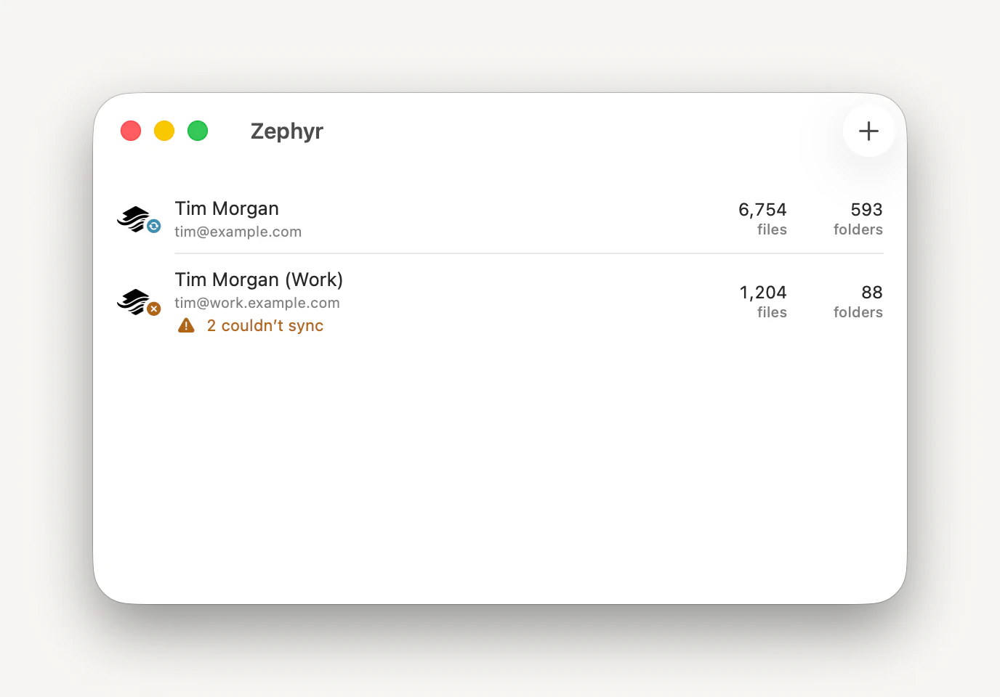
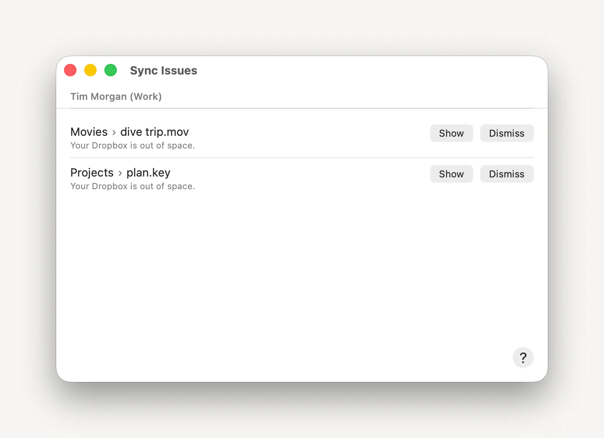
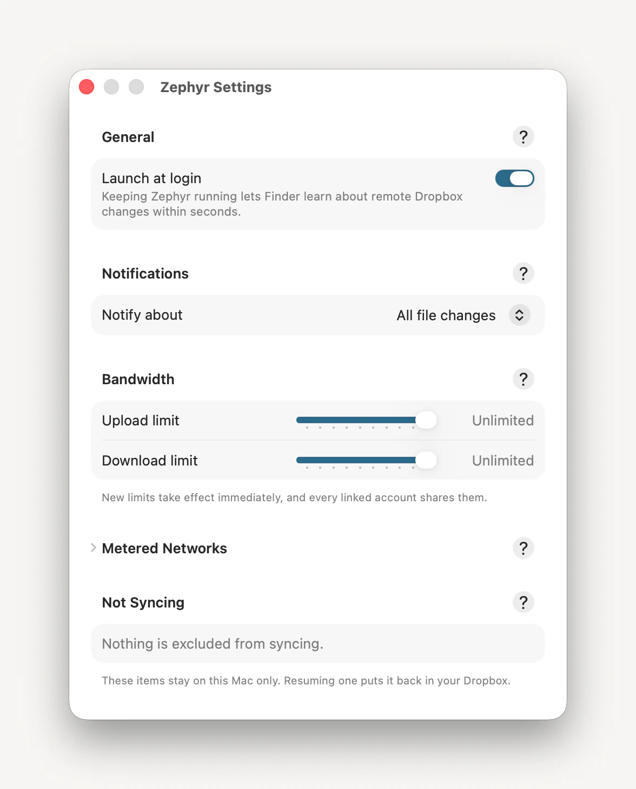
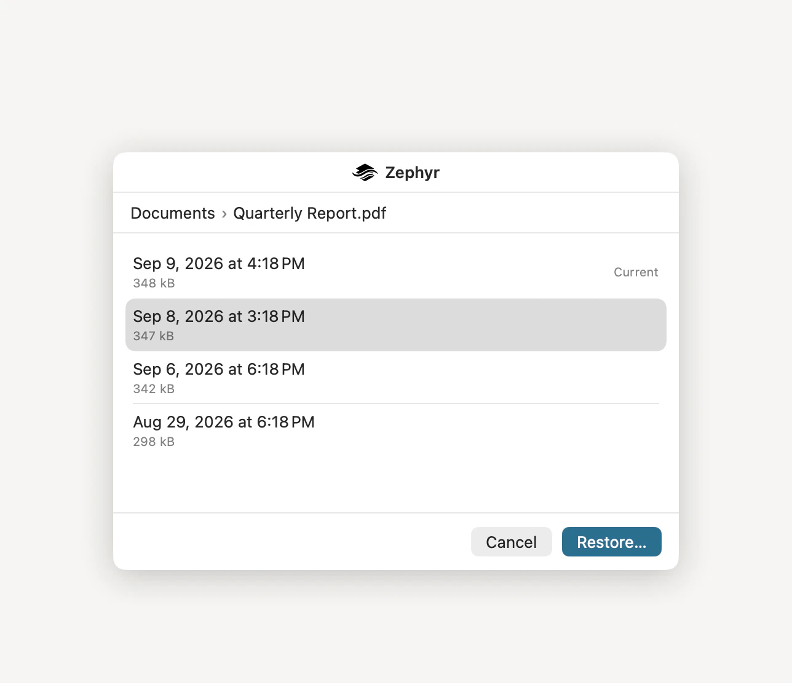
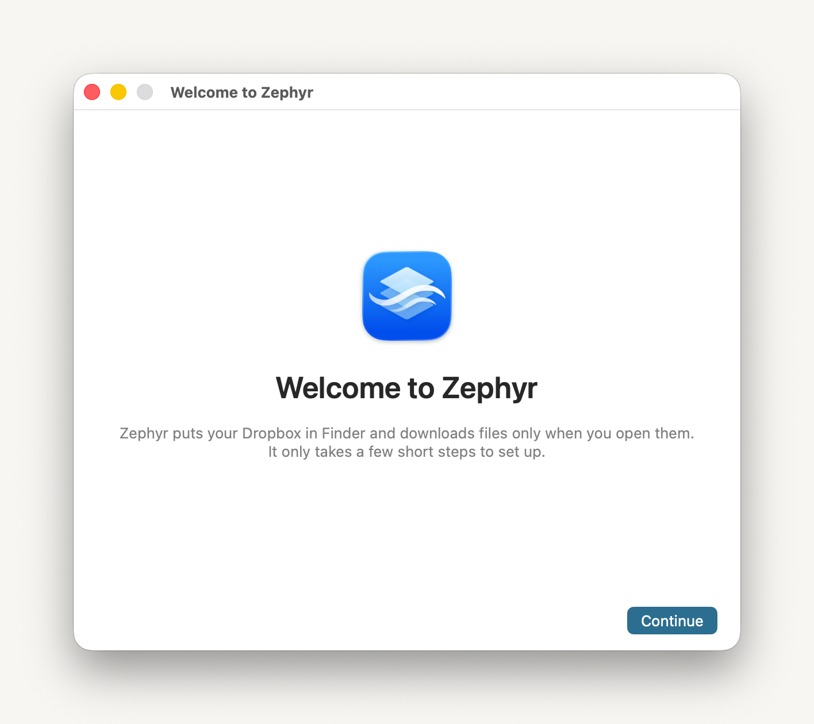

A Dropbox client that feels like macOS.
Zephyr is a Dropbox client written entirely in Swift. Your accounts sit in the Finder sidebar, files arrive the moment you open one, and the rest of the Mac — share sheet, menu bar, widget, command line — is already wired up.
Free and open source (MIT) · macOS 26 or later · Not affiliated with Dropbox
-
Written in Swift
One framework does the syncing. The menu-bar app, the Finder extension, the share sheet, the widget, and the command-line tool are all thin shells over it — no interpreter to install, and one menu-bar app doing the listening.
-
Files on demand
Zephyr is built on Apple's replicated File Provider, so macOS owns the file tree. A terabyte account costs you no local space until you open something in it.
-
One-time setup
Sign in on Dropbox's own site, then switch Zephyr on in System Settings — macOS keeps every file provider off until you do. After that there's no Zephyr folder to go find and no settings to work through before it does its job.
Features
Every one of these is in the app today. Settings belong to the Mac rather than to one account: link a second Dropbox and it shares the same limits, the same notification level, and the same snooze.

Every account at once
Personal, work, a client’s — each linked account gets its own place in the Finder sidebar and its own index. No signing out to switch.
The window that lists them says what each account holds, marks what it is doing, and counts anything that couldn’t sync. It is also where you link one, unlink one, or hand an account a fresh index when you want it rebuilt from scratch.
-
Two-way sync
Zephyr follows Dropbox's change feed on a long poll, so a file edited on another machine turns up in your Finder in seconds. What you save goes back the same way.
-
Verified transfers
Zephyr implements Dropbox's content-hash algorithm and checks each file against it in both directions. A transfer that doesn't match doesn't count.
-
Uploads that resume
Anything over 4 MiB goes up in chunks, and every chunk Dropbox acknowledges is written down. Quit mid-upload, or lose power, and the next attempt carries on from there instead of starting the file again.
-
Previews without downloads
Finder shows real image thumbnails for files that have never been on this Mac, rendered by Dropbox — JPEG, PNG, GIF, TIFF, WebP and BMP, up to 20 MB.
-
Bandwidth limits
Upload and download ceilings — ten steps from 250 kB/s to 100 MB/s, or unlimited — plus a separate, tighter cap for metered networks. Set them in Settings, or name any rate you like with
zephyr bandwidth-limit. A new limit applies to the transfer already running. -
Excluded items
Two Finder actions take an item off Dropbox while keeping it on this Mac, and put it back when you want it syncing again. Zephyr marks them with
com.dropbox.ignored, the same extended attribute the official client uses, so something you exclude in one stays excluded in the other. -
Revisions and restore
Browse what Dropbox has kept of a file and put an older one back — by right-clicking it in Finder, from a shortcut, or from the command line. Comparing two revisions is
zephyr diff. Renames and moves are followed, so a file’s history doesn’t stop at its current name. -
Shared links
A shortcut gets the link to any file or folder, making one if it doesn’t have one yet.
zephyr sharelinkalso lists what is already out there, revokes what you’re done with, and — on a Dropbox plan that allows them — sets a password, an expiry, or who is allowed to open it. -
Names that never travel
.DS_Store,desktop.ini,Icon\rand the lock files apps leave behind are held back in both directions, so a shared folder doesn’t fill up with one Mac’s bookkeeping.
When something can’t sync
A file Dropbox refuses gets a row of its own naming what went wrong, a way to it in
Finder, and a way to stop being told. What did sync is kept too — seven days of what
moved and when, in the app or from zephyr history.
Two machines editing one file is not one of those failures: Zephyr never writes over a revision it didn’t start from, so Dropbox keeps both copies, names the second one, and Zephyr picks it up as a file in its own right.
And when Dropbox resets a delta cursor, Zephyr re-lists the account and carries on, keeping your Finder tags, favorites and exclusions. The cursor is committed alongside the changes it reflects, so a crash can’t leave the index claiming state it doesn’t have.


One window of settings, and not much in it
Open at login, so Finder hears about changes made elsewhere. Choose how much you want to be told and snooze it when you don’t. Set the two ceilings, and, under Metered Networks, a tighter one for a hotspot — with indexing held back too, unless you say otherwise, so a laptop tethered to a phone doesn’t walk your whole Dropbox unasked.
Not Syncing lists everything you’ve taken off Dropbox, with a Resume beside each. Troubleshooting collects a diagnostics report for a bug report — and tells you plainly that it names your files, so you can read it first. Every section has a ? that opens the page about it in Zephyr’s help book.
Built into macOS
Zephyr's own windows are ones you can largely ignore. The interface you'll actually use is the one already on your Mac.
Favorites
- Documents
- Downloads
Locations
-
 Zephyr (you@example.com)
Zephyr (you@example.com)
-
Zephyr (you@example.org)
Nothing here is on your Mac until you open it. Browsing, renaming, moving, and dragging things in cost no download at all, and macOS decides when to let a downloaded file go again.
-
Finder sidebar
Every linked account sits under Locations, named for the address it belongs to. Browse the whole tree, rename, move, and drag things in, before a single byte has been downloaded — and image files show real previews without one.
-
Finder context menu
Show Previous Versions… on a file, Delete from Dropbox, Keep on This Mac on anything you want off Dropbox but kept here, and Put Back on Dropbox and Resume Syncing to undo that — without leaving the window.
-
Share sheet
Zephyr is one of the destinations in every macOS Share menu. Send up to twenty files at once, pick the account and the folder, and it uploads.
-
Shortcuts and Siri
Six actions in the Shortcuts app: pause or resume syncing, snooze notifications, read sync status, upload a file, get a share link, restore a file. Three of them answer in Spotlight and to Siri with nothing to set up.
-
Desktop widget
File counts and outstanding sync issues, per account, without opening anything.
-
Control Center
A Syncing switch alongside Wi-Fi and Sound. It asks macOS directly rather than the app, so it reads correctly and pauses every account whether or not Zephyr is open.
-
Notifications
Native alerts at the level you choose — every file change, sync issues, errors only, or none at all. A change one collaborator made says who made it, and every alert carries a Show button that reveals the file. Snooze them for half an hour, an hour, or eight.

In the menu bar
The Zephyr mark sits in the menu bar badged with what every account is doing right now, and drawn in amber when something couldn’t sync. Click it and you get the same thing in words: how much each account holds, what it is doing, and anything that went wrong.
From there it is one click to a folder in Finder, to Settings, to pausing every account, or to snoozing notifications while you work. If macOS is still holding back an approval Zephyr needs, the panel says so at the top and takes you to the right System Settings pane.

In Finder’s own menu
Control-click anything in your Dropbox and Zephyr’s commands are already there, at the foot of the menu macOS built — not in a submenu of their own, and not behind an app you have to go and open first.
They come and go with what you have selected. Show Previous Versions… is offered for one file and not for a folder or a selection; Delete from Dropbox, Keep on This Mac for anything you want off Dropbox but kept here.
Every version, from the context menu
Control-click a file and Show Previous Versions… lists what Dropbox still holds of it — each one by the date it was recorded and how big the file was then, with the one the file is at right now marked Current.
Choose one, confirm, and it goes back. No browser, no download folder, and no hunting for the file again afterwards. History is kept by Dropbox’s own file identifier, so renaming or moving a file doesn’t end it.


A destination in every Share menu
Wherever macOS offers a Share button, Zephyr is one of the places a file can go. You get a Quick Look at what is being sent, which account it goes to, and which folder it lands in — up to twenty files at a time.
The destination menu opens on the folders you used last, with a filterable browser behind Other Folder… that draws on what Zephyr has already indexed, so it fills in at once however large the account is. Uploads are added, never written over: a name already in use gets a new one from Dropbox.
On the desktop, without opening anything
The Sync Status widget carries each account’s file and folder counts, when it last changed, and anything that couldn’t sync. The small size leads with one account’s file count; the medium size lists up to three.
Control Center gets a switch of its own, so pausing every account is one click from the menu bar whether or not Zephyr’s panel is open. The switch asks macOS what the answer is, so it stays right even with the app closed.

Full-featured command line
The zephyr tool rides inside the direct download, and the installer's
optional Command-Line Tool component puts it on your PATH. Tab-completing
a path is answered from the sync index, so folders nothing has ever downloaded
complete exactly like folders that are fully local — and completion never touches the
network.
It also reaches things the Finder can't. zephyr find searches the
whole account by name, kind, size, or age straight from that index, turning up files
that have never been on this Mac — the one search Finder can't run inside a file
provider's folder. Twenty-two subcommands in all, twelve of them with
--json for something else to read.
$ zephyr ls /Projects
/Projects/Archive/
/Projects/budget.numbers
/Projects/proposal.pdf
$ zephyr restore /Projects/budget.numbers
Revisions of /Projects/budget.numbers, newest first:
1) Aug 21, 2026 at 4:12 PM 118 kB 0198cd1e
2) Aug 20, 2026 at 9:03 AM 117 kB 0198cc07
3) Aug 18, 2026 at 1:47 PM 115 kB 0198c944
Restore which revision? [1–3, or q to cancel] 2
Restored budget.numbers to rev 0198cc07.Set up once
Zephyr asks macOS for three things, and none of them happens without you.

The Finder extension, because macOS keeps every file provider switched off until you turn it on. Notifications, so Zephyr can say when your files change and when something couldn’t sync. And opening at login, which is what keeps Finder hearing about changes made elsewhere within seconds.
Setup explains each one before it asks for it, and signs you in through Dropbox itself, so your password never reaches Zephyr. Then you don’t see it again — everything it asked is in Settings afterwards.
Download Zephyr
The build here is signed and notarized by Apple, carries the zephyr
command-line tool — which a sandboxed App Store app can't install — and updates
itself on a schedule you pick. The Mac App Store edition trades the command line for
the App Store's own updates. Everything else is the same app, down to the bundle
identifier, so install one edition or the other rather than both.
Each release carries an installer package and a disk image. Take the
.pkg. An app dragged out of a disk image is quarantined, macOS
runs a quarantined app from a throwaway copy of its own making, and it will not run a
file provider from there at all — so a dragged Zephyr can never put a Dropbox in your
sidebar, however long you leave it trying. The installer writes the app where it
belongs, and offers to put zephyr on your PATH while
it's there.
Free and open source (MIT) · macOS 26 or later · Not affiliated with Dropbox
Questions
- Is this made by Dropbox?
- No. Zephyr is an independent, open-source client built against Dropbox's public HTTP API, and is not affiliated with, endorsed by, or sponsored by Dropbox, Inc.
- How is it different from the official client?
- Zephyr is a native Mac app written entirely in Swift, built on Apple's replicated File Provider model. There's no Dropbox folder on your disk to reconcile and nothing crawling it: macOS owns the file tree, and Zephyr answers its questions from an index of your account's remote state. It's a reimplementation of Maestral, the open-source Python Dropbox client, on that model — and where Maestral asks you to rebuild after Dropbox resets its change cursor, Zephyr re-lists the account on its own.
- Where do my files actually live?
- In your Dropbox — and in macOS's File Provider storage once something opens them. Zephyr keeps no mirrored folder of its own. The index it does keep holds paths, sizes, content hashes, and revision ids, and it never leaves your Mac.
- What does Zephyr send anywhere?
- Your files and your credentials go only between your Mac and Dropbox — there is no Zephyr server, and nothing about the contents of your account reaches the developer. Zephyr does send crash reports, and a sample of its own performance, to Sentry, so bugs can be found and fixed; that data describes the app — versions, stack traces, how long its own work took — with file names and Dropbox paths stripped out of it. It counts nothing about what you do with Zephyr. There's no setting to switch it off today. The only other request is the direct download's update check against GitHub's public releases API; the App Store build leaves that to the App Store. The privacy policy lists every field.
- Can I use it alongside the official client?
-
Zephyr reads and writes the same
com.dropbox.ignoredextended attribute the official client uses to mark items as excluded, so an item ignored in one is ignored in the other. Pointing both at the same account at once, though, isn't something Zephyr has been designed around. - Do I have to leave it running?
- To hear about remote changes promptly, yes — the app hosts the change watcher, so the Finder learns about remote edits within seconds only while Zephyr is alive. That's what the login item is for, and it's part of first-run setup.